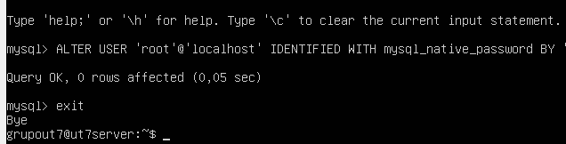
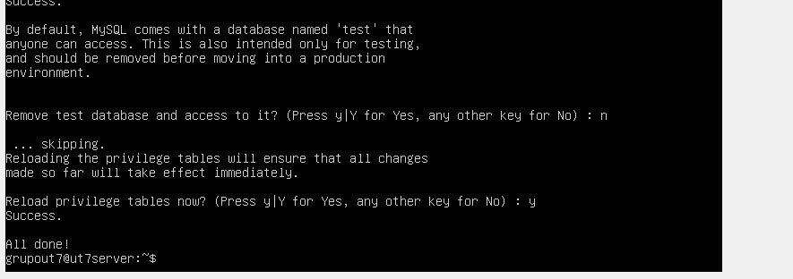

Vamos a instalar la máquina Ubuntu Server para trabajar con ella. En el proceso, crearemos un sistema de almacenamiento RAID 1 para la máquina. Hace falta aclarar que la versión utilizada del servidor es la 22.04 y que para el particionamiento RAID 1 son necesarios dos discos como mínimo.
Comenzando por el bootloader, se selecciona "Try or Install Ubuntu Server". Tras esperar un poco, comenzará la instalación.
Se empieza seleccionando el idioma. En nuestro caso, se escogerá "Español".
Se ofrece actualizar a una nueva versión del instalador. Como nosotros nos seguiremos utilizando Ubuntu 22.04, no hacemos nada, seleccionamos "Hecho".
En cuanto a la configuración del teclado, se puede seleccionar la que se quiera, pero lo común es dejar la que está por defecto (la correspondiente al idioma que hemos seleccionado con anterioridad). Una vez establecida la configuración, seleccionamos "Hecho".
Ahora hay que decidir cuál es el tipo de instalación que realizaremos. Nos decantaremos por la primera de todas ("Ubuntu Server") porque incluye un conjunto de paquetes que hacen más cómoda la administración del servidor. Después, seleccionamos "Hecho".
A continuación se nos ofrece establecer una conexión de red con otros equipos. Este apartado no nos interesa, por lo que seleccionamos "Hecho" directamente.
El siguiente apartado trata del uso de un servidor "proxy". Para el objetivo de este tutorial no es interesante, por lo que seleccionamos "Hecho" directamente.
Tampoco nos interesa configurar nada relativo al servidor espejo, por lo que seleccionamos "Hecho" directamente.
Ahora se nos presentan opciones relativas a la configuración de almacenamiento. Es aquí donde comenzaremos a crear con el particionamiento RAID 1. Para ello, seleccionamos la última opción ("Custom storage layout") y "Hecho", con lo que pasaríamos al siguiente apartado.
En esta pestaña realizaremos la secuencia descrita a continuación.
1.Crear las particiones primarias de cada disco de la forma que se puede ver en las capturas:

2.Crear las particiones extendidas de cada disco de la forma que se puede ver en las capturas, dejando el tamaño por defecto (el máximo posible) y el formato indefinido.

3.Crear el software RAID, especificando que el nivel RAID será el 1 y que las particiones involucradas serán las extendidas de cada disco.
4.Crear la partición extendida del dispositivo RAID 1, pero esta vez dándole un formato concreto. En nuestro caso, hemos escogido "ext4".
Una vez hecho todo, seleccionamos "Hecho".
Antes de continuar, se nos alerta que si continuamos se perderán todos los datos de los discos seleccionados para formatear. Habría que preocuparse si los discos tuviesen información, pero como no es el caso de los creadores de este tutorial, se selecciona "Continuar".
Después de hacer todo lo necesario en cuanto al almacenamiento, procedemos a introducir otra información, en este caso el nombre real, del servidor y de usuario, además de la contraseña de este último. Tras rellenar todos los campos, seleccionamos "Hecho".
En este apartado se nos ofrece instalar "Ubuntu Pro", que será útil durante varios años para que las actualizaciones de seguridad abarquen una mayor cantidad de paquetes. Instalarlo es una opción muy interesante. Tras decidirlo, seleccionamos "Continuar".
A continuación podemos instalar un servidor OpenSSH si así lo deseamos. Dado que es un requisito para el resto del tutorial, marcamos la casilla para hacerlo. Si no tenemos claves SSH, no hay problema. Seleccionamos "Hecho".
Aquí hay distintos snaps que podemos añadir al servidor para darle determinadas utilidades. Sería cuestión de pararse a analizar cada uno a ver cuál nos conviene más. Tras decidirlo, seleccionamos "Hecho".
Y ya habríamos terminado. Ahora hay que esperar a que termine la instalación.
También se producirá una actualización. No se cancela, esperamos pacientemente a que termine porque puede tener cosas interesantes.
Cuando la actualización acabe, seleccionamos "Reiniciar ahora".

Aquí, presionamos "Enter".
Ya hemos terminado la instalación del Ubuntu Server 22.04 con RAID 1.
Crear un sistema de copias de seguridad en un servidor seguro es muy importante porque protege contra la pérdida y corrupción de datos, producidas por diferentes causas. Este sistema de copias realizará una copia incremental diaria y una copia completa semanal, y como ejemplo actuará sobre un directorio (que es nuestro repositorio de GitHub).
Lo primero que haremos será ejecutar "sudo apt update" y "sudo apt upgrade" para evitar problemas:
Ahora tenemos que instalar dos recursos: duplicity (la herramienta que nos servirá para realizar copias de seguridad) y haveged (un demonio que es de utilidad para la generación de claves aleatorias):
Tras instalar duplicity y haveged, analizaremos si tenemos la herramienta GPG instalada. Lo haremos porque duplicity la utiliza, además de que por medio de ella generaremos claves aleatorias que hacen falta para crear los scripts de las copias. Lo haremos con el siguiente comando:
En nuestro caso está ya instalado, y su versión es la 2.2.27.
Una vez hecho todo esto, pasemos a la verdadera acción. Generamos la pareja de claves con GPG:
Es necesario que introduzcamos un nombre y un correo electrónico para que GPG pueda identificar nuestra pareja:
Después de introducir la información se nos ofrece modificar los datos por si no queremos que los anteriormente introducidos sean los almacenados. Es cuestión de pulsar alguna de las letras que aparecen en la última línea de la siguiente captura dependiendo de lo que queramos hacer. En nuestro caso, como estamos conformes, pulsamos la "O":
Ahora se nos ofrece introducir una frase de paso que habrá que escribir cada vez que queramos acceder a la pareja de claves. No es obligatorio, pero es muy recomendable porque añade una capa de seguridad extra y eso siempre se agradece en este contexto. Hay que escribirla dos veces:

Pareja generada. Es "haveged" el que se ha encargado de generar los bytes aleatorios para la clave.
Tras generar la clave, estamos en condiciones de crear los scripts de las copias de seguridad de, en nuestro caso, el directorio con los recursos de nuestro repositorio. Sin embargo, antes deberíamos generar una copia de seguridad completa del directorio, porque sin ella las copias de seguridad incrementales diarias no podrán ejecutarse (las copias incrementales necesitan un punto de referencia para realizarse, si no lo tienen no se realizan).
La copia de seguridad completa es generada de esta forma:
También hay que insertar nuestra frase de paso.
Copia completa generada.
Ahora sí, empecemos con el script de las copias incrementales diarias. Lo creamos y abrimos a la vez por medio del comando "sudo nano". En la captura puede verse que el script se está insertando en el directorio "cron.daily", el correspondiente a los scripts que se ejecutan diariamente.
Dentro del script copiamos el siguiente contenido. En él se puede ver el uso de la frase de paso que creamos con anterioridad. El formato es el siguiente:
#!/bin/sh
export PASSPHRASE="frase_de_paso"
duplicity [full|incremental] [parámetros] directorio_del_que_hacer_copia
url_de_almacenamiento
unset PASSPHRASE
Se sobreentiende que el contenido del script puede variar dependiendo de lo que se quiera copiar.
Salimos del script y modificamos sus permisos para asegurar que puede ser ejecutado:
Tras ejecutar el script, el resultado debería ser el siguiente:
Ya hemos finalizado con la copia incremental diaria. Ahora pasamos a la completa semanal. El proceso es bastante más sencillo considerando que este nuevo script tiene una sola diferencia con respecto al anterior.
Primero, copiamos el archivo de la copia incremental diaria en otro que estará contenido en el directorio "cron.weekly", el directorio que contiene los scripts ejecutados semanalmente.
Abrimos el archivo indirectamente creado en el paso anterior con "sudo nano".
Y lo único que haremos es cambiar la palabra "incremental" por "full" en la línea de duplicity, la que ejecuta la copia. De esta forma se realizaría una copia completa del directorio de manera semanal.
Para acabar, comprobamos que el script puede ejecutarse correctamente. Si no es así, podemos probar a modificar los permisos a ver si ese es el problema.
Para concluir, se vuelve a recalcar que el contenido de los scripts puede variar dependiendo de lo que se quiera copiar.
Para instalar nuestro servidor web, la segunda parte obligatoria es instalar primero todo el software necesario para su funcionamiento. En nuestro caso, instalaremos servidores SSH, FTP, Apache, MySQL y soporte de PHP para el mismo. Iremos por el orden mencionado anteriormente paso a paso
Ya nos vino instalado el propio SSH en sí cuando escogimos las opciones de configurar la máquina, asi que solo tendremos que darle a systemctl enable ssh con el sudo para que nos de los privilegios de administrador, le damos a status y veremos que está funcionando perfectamente. Así que a continuación nos meteremos con la instalación de nuestro servidor FTP Link de algo

Tras instalarlo con sudo apt install vsftpd, tendremos que configurar el siguiente archivo con sudo conf, primero lo copiaremos por si hiciéramos alguna configuración equivocada, y luego lo activaremos con ufw enable como hicimos antes

Permitiremos los siguientes puertos para que la instalación del ftp funcione sin problemas
Reiniciamos para aplicar los cambios
Tras reiniciarlo vemos que se inicio sin ningún problemas. El paso tercero lo haremos más adelante, debido a que va relacionado con el certificado de seguridad

Tras meternos en el nano conf, esto es lo que nos saldrá. Descomentamos el write y el local enable y los ponemos como YES si no lo están ya
Nos aseguramos que chroot_local_user tenga yes y esté descomentado Las siguientes configuraciones serán relativas al certificado de seguridad del servidor Poniendo ahora el tercer paso de antes, nos meteremos en la configuración del certificado de seguridad


Rellenaremos los datos que nos pidan según nos los vayan pidiendo, y tras acabar reiniciaremos de nuevo
Nos metemos de nuevo en el conf y dejamos todo exactamente como está en esta pantalla y reiniciaremos una vez másNos metemos de nuevo en el conf y dejamos todo exactamente como está en esta pantalla y reiniciaremos una vez más


Por motivos de seguridad, nos pedirá que configuremos una contraseña, tras darle a secure_installation
Elegiremos una médium, que requiere números, mayuscula y minisculas, y caracteres especiales como el * o @.
Nos dará error al ponerlo, porque no configuramos el comando al principio. Este será el primer paso que haremos
Pondremos justo este comando, que ya nos dejará entrar, aunque debemos entrar con un comando distinto. Esto por temas de seguridad, se configurará más adelante

Aqui configuramos la contraseña del root

Y hacemos que no se pueda conectar al root desde otros ordenadores distintos del host para cambios no deseados
Y recargamos los privilegios de las tablas
Entramos con el comando mysql -u root -p y nos deja entrar sin ningún problema

Lo instalamos con el comando de arriba
Y para ver la versión le daremos a php -v, que nos dice que estamos usando la 8.1.2
Abra el archivo de configuración de SSH: Para ello, usaremos el siguiente comando:
$ sudo nano /etc/ssh/sshd_config
Denegar la contraseña vacía: Usar una contraseña vacía pone en alto riesgo la seguridad de SSH. Por lo tanto, para asegurar la conexión SSH, deberá rechazar todos los intentos de inicio de sesión con una contraseña vacía. Para realizar este paso, ubique la línea “PermitEmptyPasswords no” y descoméntalo.
Permitir el inicio de sesión raíz: Si lo denegamos, disminuirán las probabilidades de que un intruso pueda acceder a nuestro SSH simplemente por medio de “root” (usuario al que se puede acceder simplemente con “sudo” y poniendo la contraseña). Para ello, busca la opción “PermitRootLogin”, descomentamos la línea y reemplazamos el texto “prohibit-password" con "no”.
El protocolo SSH 2: La versión 1 es vulnerable a un agujero de seguridad que potencialmente permite a un intruso insertar datos en la corriente de comunicación, además de que las patentes de algunos de sus algoritmos de cifrado han expirado. La versión 2 del protocolo SSH tiene un algoritmo de intercambio de claves mejorado que no es vulnerable a ese agujero. Para utilizarlo, debemos añadir la línea "Protocol 2" en el archivo de configuración justo por encima de donde pone “Include /etc/ssh/sshd_config.d/*.conf”
Establecer un tiempo de espera de sesión: Puede reducir el tiempo de sesión de su servidor SSH para permitir que el intruso acceda a su sistema. Por ejemplo, si establecemos el valor en 200 segundos y el usuario permanece alejado de su sistema durante 200 segundos, se cerrará automáticamente. Para hacer este paso, busque la variable con el nombre “ClientAliveInterval”. Descomenta la variable y cambia el valor 0 con la cantidad de segundos.
Permitir que un usuario específico acceda al servidor: Para realizar este paso, escribe la variable “AllowUsers” en el archivo de configuración. Luego escribe el nombre del usuario delante de la variable.
Limita el número de intentos de inicio de sesión: Esto puede ayudar a evitar ataques de fuerza bruta, una forma de recuperar una clave probando todas las combinaciones posibles hasta encontrar aquella que permite el acceso. Para esto, buscamos la variable “MaxAuthTries", la descomentamos y elegimos el valor que queramos (por defecto será 6).
Una vez hecho esto, solo queda Guardar el archivo pulsando CTRL+X seguido de Y, y luego pulsa Intro (Esto es importante, pues lo vamos a hacer constantemente a la hora de securizar cada una de las aplicaciones instaladas en Ubuntu Server):
Ejecutar el servidor en modo de prueba con el siguiente comando:
$ sudo sshd -t
Este comando no devuelve ningún resultado. Si se ejecuta sin errores, significa que las configuraciones son correctas.
Recargar el servidor para realizar los cambios en Ubuntu con el siguiente comando:
$ sudo service sshd reload
Generar el certificado de seguridad SSL y usarlo para proteger el servidor FTP de Ubuntu. Con el comando "sudo openssl req -x509 -nodes -days 365 -newkey rsa:2048 -keyout /etc/ssl/private/vsftpd.pem -out /etc/ssl/private/vsftpd.pem". (Nos pedirán varios datos como el país, estado o provincia, correo electrónico…)
Abrir el archivo de configuración con el comando "sudo nano /etc/vsftpd.conf".
Con un ‘#’ comenta las siguientes líneas (Si no lo están ya):
#rsa_cert_file=/etc/ssl/certs/ssl-cert-snakeol.pem
#rsa_private_key_file=/etc/ssl/private/ssl-cert-snakeoil.key
Nos dirigimos al final del archivo y escribimos las siguientes líneas (si no están ya):
rsa_cert_file=/etc/ssl/private/vsftpd.pem
rsa_private_key_file=/etc/ssl/private/vsftpd.pem
Ahora habilitaremos SSL y nos aseguraremos de que solo los clientes que tengan SSL habilitados nos puedan contactar. Buscamos el archivo ssl_enable y cambiamos su valor a YES.
A continuación, añade las siguientes líneas para prohibir cualquier conexión anónima a través de SSK:
allow_anon_ssl=NO
force_local_data_ssl=YES
force_local_logins_ssl=YES
Configura el servidor para usar TLS usando:
ssl_tlsv1=YES
ssl_sslv2=NO
ssl_sslv3=NO
En primer lugar, no será necesario reutilizar SSL porque puede ocasionar que muchos clientes de FTP se averíen. En segundo lugar, utilizaremos suites de encriptación de alto cifrado, lo que significa que las longitudes de claves son iguales o superiores a 128 bits:
require_ssl_reuse=NO
ssl_ciphers=HIGH
(En este caso, no tuve que cambiar nada para securizar FTP ya que ya estaba todo así por defecto.)
Guardar el archivo y reiniciamos vsftpd una vez más para aplicar las nuevas configuraciones utilizando el comando "sudo systemctl restart vsftpd".
Desactivar listado de directorios: Para ello nos dirigiremos al fichero de configuración escribiendo "sudo nano /etc/apache2/apache2.conf", buscaremos la directiva ‘Options’, debiendo quedar de la siguiente forma:
Permitir o Denegar acceso a directorios: Podemos configurar el acceso a los directorios desde el fichero de configuración con los siguientes parámetros:
None: No permitirá a los usuarios activar ninguna funcionalidad sobre este directorio.
Deny, Allow: Este es el orden en el que serán procesadas las órdenes.
Deny from all: Esta directiva denegará el acceso a las peticiones de todos los usuarios al directorio ‘root’.
Debe quedar de la siguiente forma:
Usar Mod_Evasive: Mod_evasive previene ataques DDoS y ataques por fuerza bruta, procesando cada petición con detenimiento analizando su composición. Usa tres métodos de detección:
1- Si detecta muchas peticiones en la página en pocos segundos.
2- Si cualquier proceso trata de realizar más de cincuenta peticiones concurrentes.
3- Si una IP sigue intentando hacer nuevas peticiones cuando ésta se encuentra en lista negra.
Para su instalación sólo deberemos ejecutar el comando “sudo apt-get install libapache2-mod-evasive”.
Para configurar MySql, lo primero que hay que hacer es escribir el comando “mysql -u root -p” y luego escribir la contraseña que hayamos puesto en MySql (NO CONFUNDIR CON LA CONTRASEÑA DEL UBUNTU SERVER).
Cambiar el usuario root por otro nombre: Podemos cambiar el usuario por defecto de root por otro usuario que nos convenga. Esto lo hacemos para que no se tenga acceso a través del mismo. Para hacer esto, solo debemos escribir "RENAME USER root@localhost TO nuevonombre@localhost; FLUSH PRIVILEGES;".
Para no tener que tocar el usuario root, crearemos un nuevo usuario con privilegios sobre todas las tablas. Escribimos "CREATE USER nombreUsuario@localhost IDENTIFIED BY ‘contraseña’" (LA CONTRASEÑA DEBE ESTAR ENTRE COMILLAS SIMPLES).
Asignamos privilegios al usuario para que pueda utilizar todas las tablas escribiendo "GRANT ALL PRIVILEGES ON *.* TO nombreUsuario@localhost;".
Comprobamos que se han asignado correctamente usando "SHOW GRANTS FOR nombreUsuario@localhost;".
Para configurar MySql, lo primero que hay que hacer es escribir el comando “sudo nano /etc/php/apache2/php.ini”.
Deshabilitar expose_php: expose_php es una variable que permite mostrar qué versión de PHP está instalada en el servidor en la cabecera HTML. Por ende debe ir desactivada, así un atacante no podrá conocer qué versión de PHP usas debe quedar así: “expose_php = Off”.
Deshabilitar session.use_trans_sid: Con la variable session.use_trans_sid resulta más fácil la programación de aplicaciones que usen sessiones. La desventaja es que cuando está activado puede llegar a ser usado para simular una sesión activa en el server. Debe quedar así: “session.use_trans_sid = Off”.
Desactivar acceso a URL remotas en funciones de manejo de ficheros: Funciones como include, fopen o file_get_contents permiten, además de hacer llamadas a ficheros locales, llamar a ficheros vía URL, esto puede provocar graves errores de seguridad invocando a scripts maliciosos que se encuentran fuera de nuestro servidor y su ejecución remota. Debe poner "allow_url_fopen = Off":
Visualización y registro de errores: evitamos que cualquier error o warning se muestre por pantalla y hacemos que se registren directamente en un log especificado con estas directivas: debe poner “display_errors = Off”, “log_errors = On” y finalmente “error_log = (aquí ponemos donde se visualizarán los errores)”
Deshabilitar enable_dl: Esta variable se usa solamente en conjunto con el servidor web Apache. Sirve para activar o desactivar la carga dinámica de extensiones PHP con dl() por servidor virtual o directorio. Con la carga dinámica, es posible ignorar todas las restricciones open_basedir. Debe quedar de la siguiente forma: “enable_dl = Off”.
CONFIGURAR EL FIREWALL DEL EQUIPO PARA EVITAR ACCESOS INDESEADOS: Con el fin de evitar accesos indeseados es altamente recomendable activar el firewall del equipo que aloja los servicios. Hay muchas formas de configurar el firewall de un equipo Linux, pero en principio la solución más fácil para los principiantes sería usar ufw. Para instalar ufw, ejecutamos el comando “sudo apt install ufw” en la terminal.
Ahora tendremos que definir la política por defecto del Firewall para mejorar la seguridad de nuestro servidor. En este caso lo primero que realizo es definir las siguientes reglas:
- Que todo el tráfico saliente esté permitido.
- Que la totalidad del tráfico entrante esté bloqueado.
Para aplicar estas 2 reglas solo hay que ejecutar los siguientes comandos en la terminal:
sudo ufw default allow outgoing
sudo ufw default deny incoming
Lo siguiente será habilitar ssh en el firewall con el comando “sudo ufw allow puerto/tcp”. Acto seguido tendríamos que definir las reglas para dar acceso al servidor web que proporcionará el servicio a los clientes. Para ello ejecutaremos los siguientes comandos en la terminal:
sudo ufw allow 80/tcp
sudo ufw allow 443/tcp
Una vez hecho todo esto, solo queda asegurar que el firewall está activo y que se levanta cada vez que se reinicia el equipo. Para ello, utilizaremos el comando “sudo ufw enable”.
ACTUALIZAR EL EQUIPO QUE ALOJA EL SERVICIO WEB: Para actualizar nuestro sistema operativo de forma automática tan solo tenemos que instalar el paquete unattended-upgrades. Para ello solo tenemos que ejecutar el comando “sudo apt install unattended-upgrades” en la terminal.
Una vez instalado el paquete activen las actualizaciones automáticas ejecutando el comando “sudo dpkg-reconfigure -plow unattended-upgrades”.